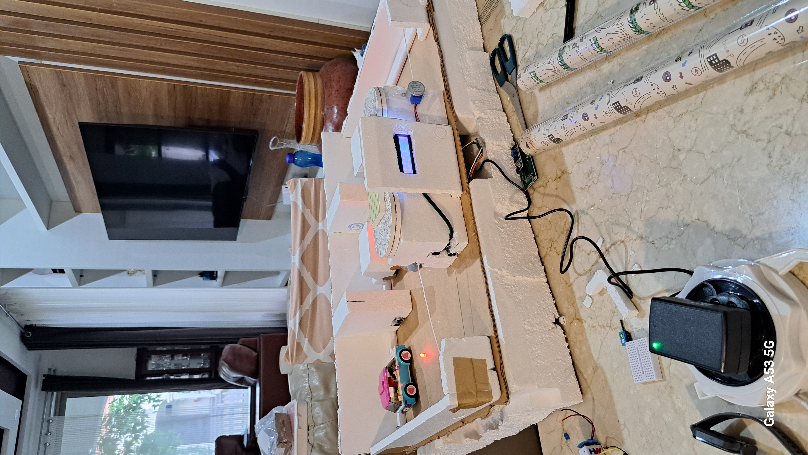
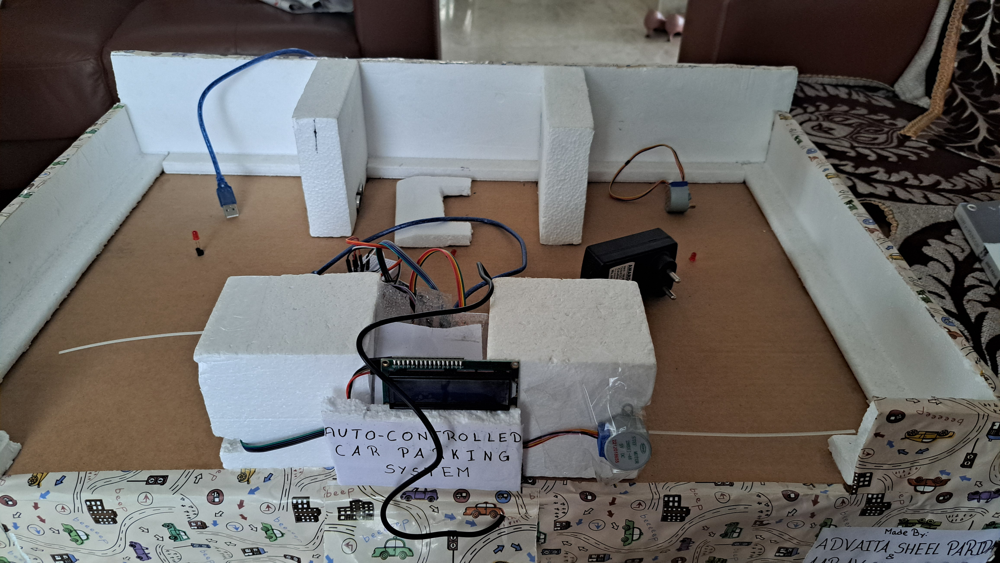
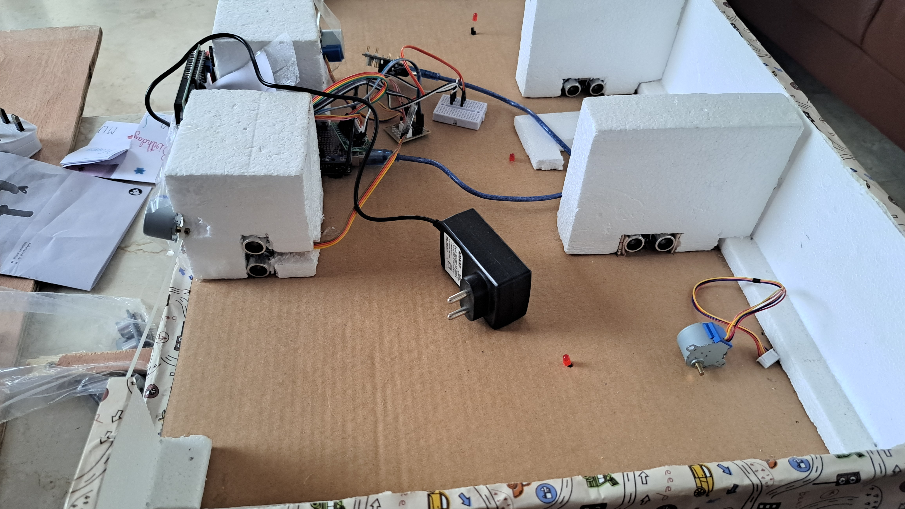

The Automated Controlled Car Parking System revolutionizes parking with smart automation. It detects incoming and outgoing cars, tracks available spaces, and provides real-time updates via an LCD display. The system operates entry/exit gates using stepper motors, controlled by ultrasonic sensors, ensuring seamless operation without manual intervention.
The system features LED indicators for each parking spot, making it easy to identify available spaces. A counter system updates vacant spaces on the display. While effective, the current Styrofoam frame lacks durability, and plans are in place to transition to a more durable material like wood for enhanced performance.


